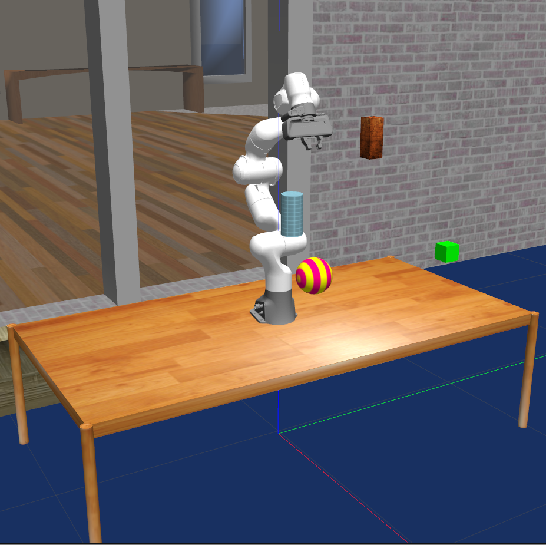

|
Hello! I am a PhD candidate at the Munich School of Robotics and Machine Intelligence of the Technical University of Munich. My research is focused on perception and control for robotic manipulation. Prior, I did my M.Sc. in Electrical and Computer Engineering with a focus on automation and robotics at TUM, where I worked with Prof. Diepold. Email / Google Scholar / Twitter / Github |

|
ResearchMy research is focused on moving robotic manipulation from the lab to practice. Much of my work is about learning in the physical world, computer vision, control, reinforcement learning & optimal control. |
|  |
Elie Aljalbout, Ji Chen, Konstantin Ritt, Maximilian Ulmer, Sami Haddadin CoRL, 2020 project page / video / arXiv Learn obstacle avoidance policies while maintaining closed-loop responsiveness required for critical applications like human-robot interaction. |
TeachingTechnical University of MunichEI71056: Advanced Robot Control and Learning [Winter 2019] [Winter 2020] Student Robothon: "Coastal Cleanup: Robotics-aided Climate Protection" [Winter 2019]
|
Credits to Jon Barron